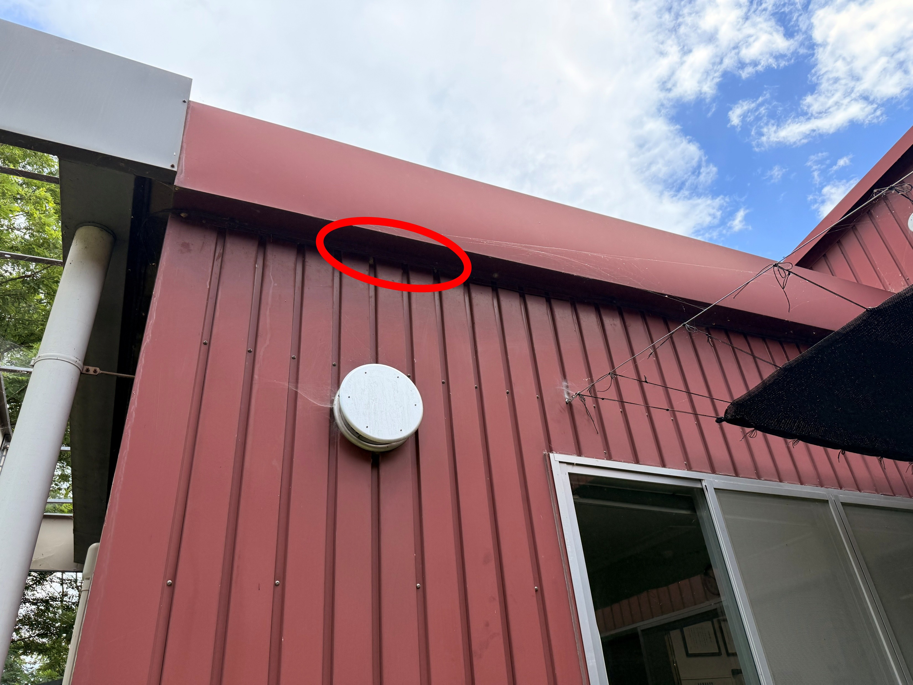
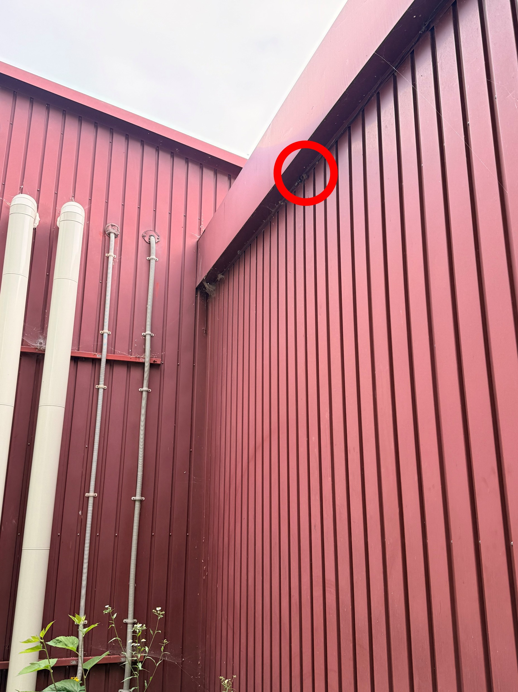
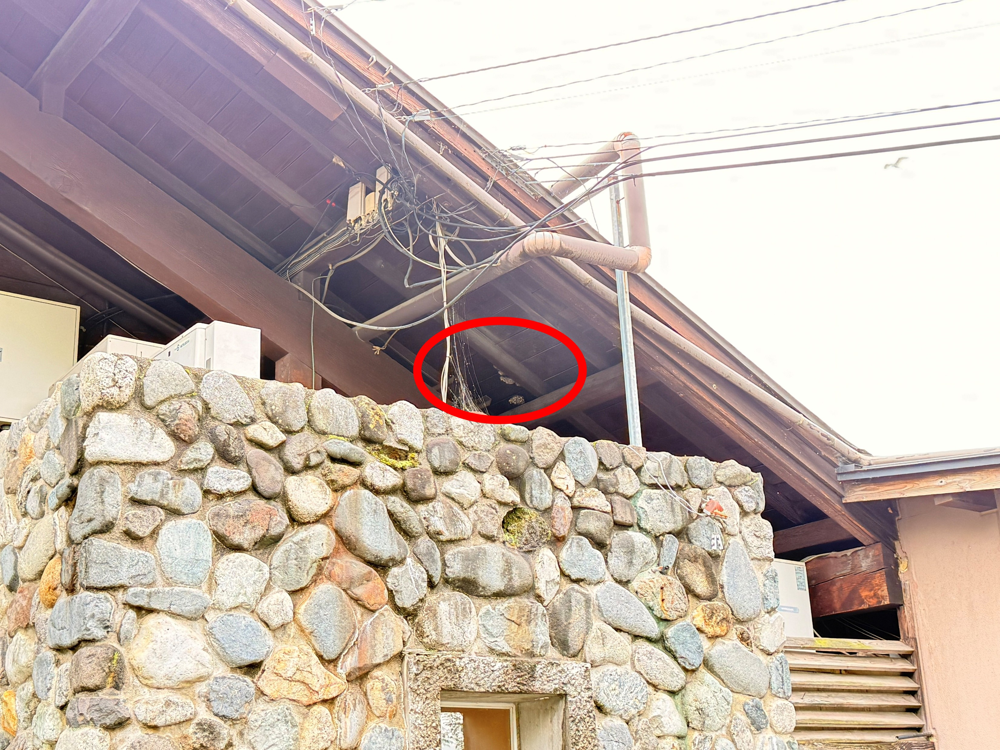
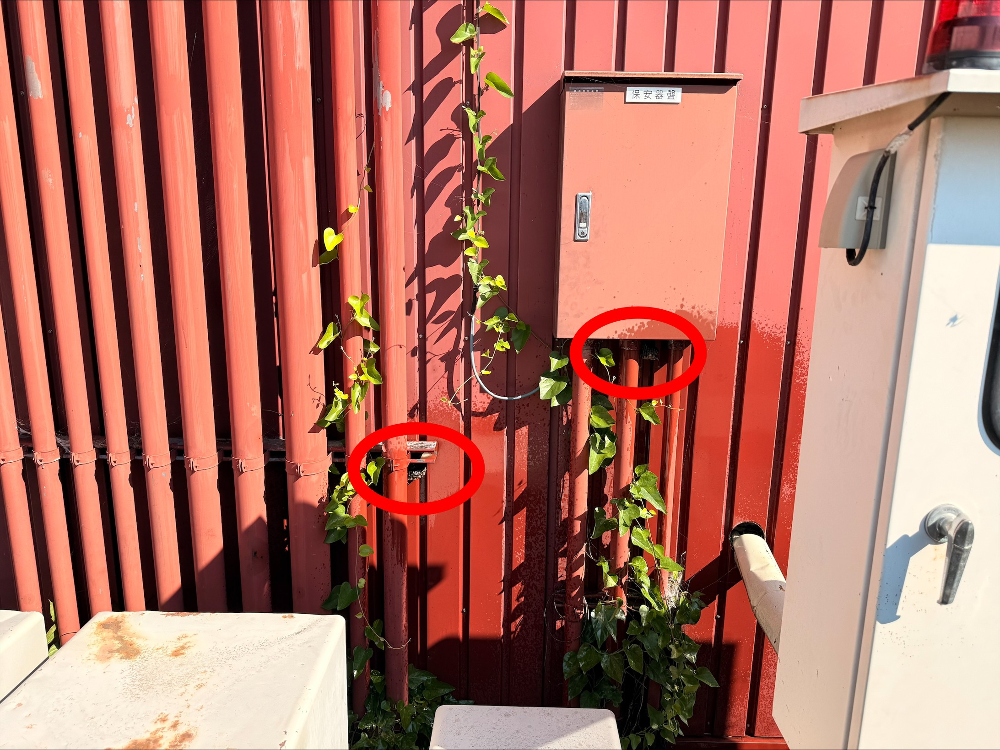

<!DOCTYPE html>
<html>
<head>
    <meta charset="utf-8">
    <title>ハチの巣発生場所（2025年）</title>
    <style>
        html, body {
            height: 100%;
            margin: 0;
        }
        #map {
            width: 100%;
            height: 100%;
        }
        .leaflet-popup-content-wrapper {
            font-family: sans-serif;
            font-size: 14px;
        }
        .leaflet-popup-content img {
            max-width: 200px;
            height: auto;
        }
        .popup-title {
            font-weight: bold;
            color: black;
        }
    </style>
    <link rel="stylesheet" href="https://unpkg.com/leaflet/dist/leaflet.css" />
    <script src="https://unpkg.com/leaflet/dist/leaflet.js"></script>
</head>
<body>
    <div id="map"></div>
    <script>
        var map = L.map('map').setView([36.3360211, 137.9123328], 18);
        L.tileLayer('https://{s}.tile.openstreetmap.org/{z}/{x}/{y}.png', {
            maxZoom: 20,
            attribution: '&copy; OpenStreetMap contributors'
        }).addTo(map);

        var popupStates = {};
        var points = [
            [36.3377969, 137.9074277],
            [36.3378101, 137.9073801],
            [36.3378733, 137.9073825],
            [36.3377199, 137.9074173],
            [36.3374585, 137.9078043],
            [36.3373820, 137.9077020],
            [36.3397033, 137.9088071],
            [36.3396547, 137.9087253],
            [36.3393840, 137.9086820],
            [36.3391953, 137.9087913],
            [36.3392191, 137.9089274],
            [36.3391389, 137.9090347],
            [36.3389847, 137.9089553],
            [36.3388642, 137.9090072],
            [36.3388177, 137.9089740],
            [36.3385477, 137.9089341],
            [36.3389760, 137.9091588],
            [36.3388037, 137.9092335],
            [36.3385166, 137.9097297],
            [36.3375770, 137.9074440],
            [36.3388180, 137.9102240],
            [36.3386360, 137.9098480],
            [36.3382333, 137.9086750],
            [36.3389296, 137.9085174],
            [36.3381871, 137.9107470],
            [36.3378636, 137.9089415],
            [36.3357375, 137.9125779],
            [36.3377942, 137.9076936],
            [36.3389720, 137.9093550],
            [36.3383830, 137.9088000],
            [36.3395740, 137.9084160]
        ];

        var contents = [
            `<div class="popup-title">本社事務所西側（1ヶ所）</div>`,
            `<div class="popup-title">洗濯物干し周辺（1ヶ所）</div>`,
            `<div class="popup-title">冷凍冷蔵庫製御盤周辺（1ヶ所）</div>`,
            `<div class="popup-title">灯油タンク付近（1ヶ所）</div>`,
            `<div class="popup-title">喫煙所付近（7ヶ所）</div>`,
            `<div class="popup-title">喫煙所付近（3ヶ所）</div>`,
            `<div class="popup-title">フードコート喫煙所（4ヶ所）</div>`,
            `<div class="popup-title">飲食スペース天井（6ヶ所）</div>`,
            `<div class="popup-title">ソフト売場南側窓口下（1ヶ所）</div>`,
            `<div class="popup-title">大王庵西畑側軒下（8ヶ所）</div>`,
            `<div class="popup-title">大王庵裏口・軒下・パーテーション裏（5ヶ所）</div>`,
            `<div class="popup-title">大王庵入口デッキ軒下（3ヶ所）</div>`,
            `<div class="popup-title">大王庵客席テラス（4ヶ所）</div>`,
            `<div class="popup-title">添乗員休憩室テラス軒下（8ヶ所）</div>`,
            `<div class="popup-title">オアシススタッフ出入口（4ヶ所）</div>`,
            `<div class="popup-title">湧水ホール側軒下（4ヶ所）</div>`,
            `<div class="popup-title">オアシス北側デッキ軒下（7ヶ所）</div>`,
            `<div class="popup-title">オアシス客席テラス軒下（3ヶ所）</div>`,
            `<div class="popup-title">カフェ入口軒下（1ヶ所）</div>`,
            `<div class="popup-title">工場西の物置内（4ヶ所）</div>`,
            `<div class="popup-title">幸いのかけ橋橋下（11ヶ所）</div>`,
            `<div class="popup-title">茶室軒下（4ヶ所）</div>`,
            `<div class="popup-title">ゴミ捨て場（5ヶ所）</div>`,
            `<div class="popup-title">ガイドハウス（3ヶ所）</div>`,
            `<div class="popup-title">休憩所近く（1ヶ所）</div>`,
            `<div class="popup-title">古畑降り口の切り株中（オオスズメバチ）</div>`,
            `<div class="popup-title">湧水始まり付近の切り株中（オオスズメバチ）</div>`,
            `<div class="popup-title">発送室南側（2ヶ所）</div>`,
            `<div class="popup-title">オアシステラスの入口階段の下（1ヶ所）</div>`,
            `<div class="popup-title">ポプラ並木喫煙所の上あたり(木の枝、高さ約3mほどの位置)（小型スズメバチ）</div>`,
            `<div class="popup-title">和さび堂搬入口出たところの木(高さ約4mほどの位置)（小型スズメバチ）</div>`
        ];

        var redIcon = new L.Icon({
            iconUrl: 'https://raw.githubusercontent.com/pointhi/leaflet-color-markers/master/img/marker-icon-red.png',
            shadowUrl: 'https://unpkg.com/leaflet/dist/images/marker-shadow.png',
            iconSize: [25, 41],
            iconAnchor: [12, 41],
            popupAnchor: [1, -34],
            shadowSize: [41, 41]
        });

        var redPoints = [
            [36.3378636, 137.9089415],
            [36.3357375, 137.9125779],
            [36.3383830, 137.9088000],
            [36.3395740, 137.9084160]
        ];

        for (let i = 0; i < points.length; i++) {
            let latlng = points[i];
            let content = contents[i];
            let icon = new L.Icon.Default();
            if (redPoints.some(p => p[0] === latlng[0] && p[1] === latlng[1])) {
                icon = redIcon;
            }
            let marker = L.marker(latlng).addTo(map);
            let popup = L.popup({ autoClose: false, closeOnClick: false }).setContent(content);
            popupStates[i] = false;

            marker.on('click', function () {
                if (popupStates[i]) {
                    map.closePopup(popup);
                    popupStates[i] = false;
                } else {
                    popup.setLatLng(latlng).openOn(map);
                    popupStates[i] = true;
                }
            });

        }
    </script>
</body>
</html>
